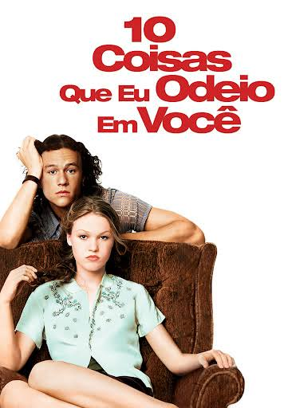

Sessão especial · feita para você
Seus filmes favoritos
Oito histórias, oito jeitos de se apaixonar. Escolha um filme e entre no clima da sessão.

02 · ROMANCE ADOLESCENTE10 coisas que odeio em vocêUma aposta, uma banda e sentimentos sinceros.Abrir página 03 · ROMANCE & ADOLESCÊNCIAPara todos os garotos que já ameiCartas secretas, coragem e um namoro de mentira.Abrir página 04 · FANTASIA & ROMANCECrepúsculoUma cidade chuvosa, um segredo e uma escolha.Abrir página 05 · FANTASIA & ROMANCEA Saga Crepúsculo: Lua NovaDespedidas, amizade e o caminho de volta.Abrir página 06 · ROMANCE & COMÉDIASimplesmente aconteceDois melhores amigos e muitos desencontros.Abrir página 07 · COMÉDIA ROMÂNTICAEsposa de mentirinhaUma viagem ao Havaí complica uma mentira.Abrir página 08 · CONTO DE FADAS MODERNOA nova CinderelaUm baile, uma mensagem e um tênis esquecido.Abrir página